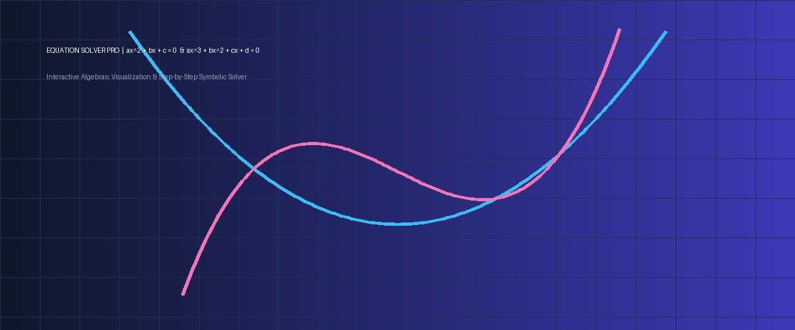

ដោះស្រាយសមីការដឺក្រេទី២ និងទី៣ ប្រកបដោយភាពជាក់លាក់
គណនាឫសពិត ឫសកុំផ្លិច ឫសឌុប និងករណីពិសេសគ្រប់លក្ខខណ្ឌ ព្រមទាំងបង្ហាញរូបមន្ត និងជំហានដោះស្រាយលម្អិតជាភាសាខ្មែរ និងអង់គ្លេស។

សមីការដឺក្រេទី២
គណនាតាមឌីសគ្រីមីណង់ (Δ) គាំទ្រទាំង Δ > 0, Δ = 0, Δ < 0 និងករណី a = 0។
សមីការដឺក្រេទី៣
ប្រើវិធីសាស្ត្រ Cardano & Trigonometric ដើម្បីរកឫសពិតទាំង ៣ ឬឫសកុំផ្លិចឆ្លាស់។
បណ្ណាល័យរូបមន្ត
សង្ខេបរូបមន្តសំខាន់ៗ ទំនាក់ទំនងរវាងឫស និងមេគុណ (Viète) សម្រាប់សិស្សវិទ្យាល័យ។
ក្រុមការងារគម្រោង
ស្គាល់ប្រធានក្រុម និងសមាជិកទាំង ៤ រូប ដែលបានចូលរួមអភិវឌ្ឍកម្មវិធីនេះ។
ដោះស្រាយសមីការ 𝑎𝑥² + 𝑏𝑥 + 𝑐 = 0
ឧទាហរណ៍សាកល្បងគ្រប់ករណី៖
លទ្ធផល និងជំហានដោះស្រាយ
ដោះស្រាយសមីការ 𝑎𝑥³ + 𝑏𝑥² + 𝑐𝑥 + 𝑑 = 0
ឧទាហរណ៍សាកល្បងគ្រប់ករណី៖
លទ្ធផល និងជំហានដោះស្រាយ
រូបមន្តសមីការដឺក្រេទី២
- Δ > 0 : សមីការមានឫសពិតពីរផ្សេងគ្នា៖
x₁ = (-b + √Δ) / (2a),x₂ = (-b - √Δ) / (2a) - Δ = 0 : សមីការមានឫសឌុប (ឫសពិតពីរស្មើគ្នា)៖
x₁ = x₂ = -b / (2a) - Δ < 0 : សមីការមានឫសកុំផ្លិចឆ្លាស់ពីរ៖
x₁,₂ = (-b ± i√|Δ|) / (2a) - Viète :
S = x₁ + x₂ = -b/a,P = x₁·x₂ = c/a
រូបមន្តសមីការដឺក្រេទី៣ (Cardano)
- p & q :
p = (3ac - b²) / (3a²),q = (2b³ - 9abc + 27a²d) / (27a³) - Δ₀ :
Δ₀ = (q/2)² + (p/3)³ - Δ₀ > 0 : មានឫសពិត ១ និងឫសកុំផ្លិចឆ្លាស់ ២ (រូបមន្ត Cardano)។
- Δ₀ = 0 : ឫសទាំងអស់ជាចំនួនពិត ហើយមានឫសឌុប ឬឫសបីជាន់។
- Δ₀ < 0 : មានឫសពិត ៣ ផ្សេងគ្នា (ដោះស្រាយតាមត្រីកោណមាត្រ cos/arccos)។
ប្រវត្តិនៃការគណនាសមីការ
សមាជិកក្រុមអភិវឌ្ឍន៍គម្រោង
ក្រុមសិស្សវិទ្យាល័យចំនួន ៥ រូប (ប្រធានក្រុម ១ រូប និងសមាជិក ៤ រូប) ដែលបានសហការគ្នាបង្កើតកម្មវិធីនេះ។
អំពី Equation Solver Pro
Equation Solver Pro គឺជាកម្មវិធីគេហទំព័រអប់រំដែលត្រូវបានរចនាឡើងជាពិសេសសម្រាប់សិស្សានុសិស្សកម្រិតវិទ្យាល័យ ដើម្បីងាយស្រួលក្នុងការផ្ទៀងផ្ទាត់ចម្លើយ និងសិក្សាពីជំហានដោះស្រាយសមីការដឺក្រេទី២ និងសមីការដឺក្រេទី៣។
🛠️ បច្ចេកវិទ្យាប្រើប្រាស់
- HTML5 Semantic Structure
- CSS3 Variables, Flexbox, Grid & Animations
- Vanilla JavaScript (ES6+ Modular Architecture)
- LocalStorage សម្រាប់រក្សាទុកប្រវត្តិ និងភាសា
✨ លក្ខណៈពិសេស
- គាំទ្រភាសាខ្មែរ 🇰🇭 និងអង់គ្លេស 🇬🇧 ពេញលេញ
- ដោះស្រាយគ្រប់ករណីពិសេស (a=0, Δ<0, ឫសឌុប, គ្មានចម្លើយ)
- ប្តូរពន្លឺ Light Mode និង ងងឹត Dark Mode
- ដំណើរការលើកុំព្យូទ័រ ថេប្លេត និងទូរស័ព្ទដៃ